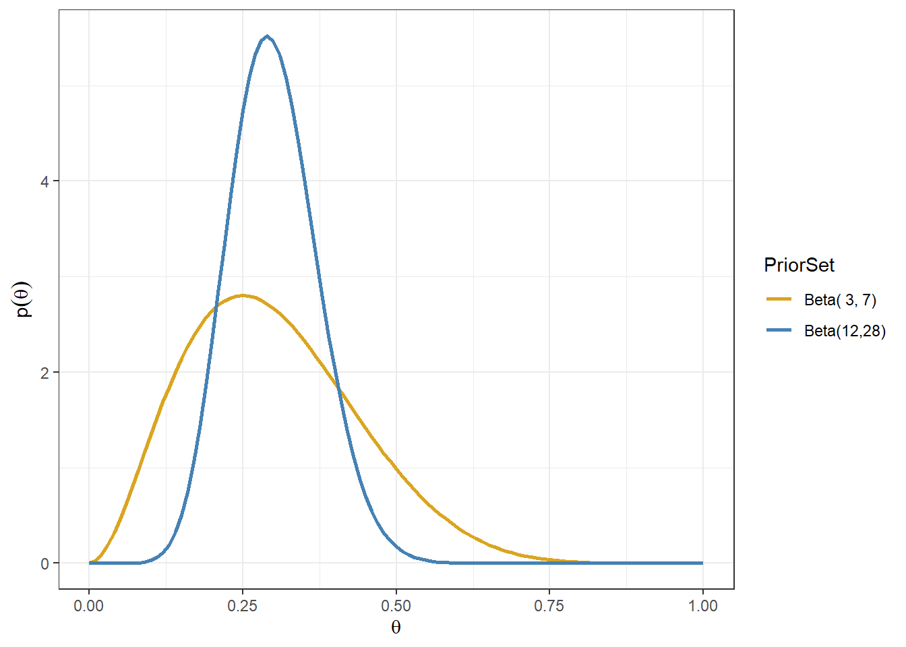

Session 3 Introduction to Bayesian inference
- Review of frequentist inferential approaches
- Introduce Bayesian inference
- Learn two simple Bayesian models (Beta-binomial & normal-normal)
- Discuss practical advantages and disadvantages of Bayesian approach
3.1 Classical frequentist approach
The classical (frequentist) statistical approach takes many forms, but the most wide-ranging is the likelihood-based approach
This approach specifies a distributional form for data and considers the parameters of the distributions to be fixed constants to be estimated.
The parameters are estimated by finding the values that maximize the likelihood (hence the name)
i.e. given the observed data, and assuming they come from specific distributions, what are the parameter values for these distributions that maximize the likelihood of these data?
Review of likelihood function
- Given a statistical model with some parameters (let’s call them \(\theta\)), and given a set of observed data of size \(n\), \(D = \{x_1, x_2, \ldots, x_n \}\), the likelihood function, \(L(\theta, D)\) is a function that for every value of \(\theta\) is equal to the probability (mass or density) of observing \(D\) given \(\theta\)
- i.e. \(L(\theta, D) = L_D(\theta) = P(Data | \theta)\)
- if we assume \(x_1, x_2, \ldots, x_n\) are independent and identically distributed, we can express the likelihood function as
\[ L(\theta, D) = P(x_1 \mid \theta)\times P(x_2 \mid \theta) \ldots \times P(x_n \mid \theta) = \prod_{i=1}^n P(x_i\mid \theta).\]
Example - Bernoulli trials Suppose we want to estimate the risk of death \(\theta\) after a surgery
- We assume that every patient has the same risk \(\theta\)
- We collect data from 10 surgeries and we find that 3 patients died and 7 survived,
- What is the likelihood function for \(\theta\) in this example?
The distribution for each patient is \(Bernoulli(\theta)\) the probability of the number of those who died out of \(n\) (here \(n\)=10) is \(Binomial(\theta, 10)\)
The probability mass function of the binomial is \[p(x|\theta, n) = {n \choose x} \theta^x (1-\theta)^{n-x}\]
The likelihood function of the observed data (3 deaths out of 10) given \(\theta\) is \[ L_D(\theta) = p(x=3| \theta) = {10 \choose 3} \theta^3 (1-\theta)^{10-3} \propto \theta^3 (1-\theta)^{10-3}\]
Maximum Likelihood Estimator
- The value that maximizes the likelihood function is called the maximum likelihood estimator or MLE
- It is the “most likely” value for \(\theta\) given the observed data
- In this example it is equal to \(\hat{\theta}_{mle} = \frac{x}{n} = \frac{3}{10}=0.3\) (the observed proportion of event), which can be obtained by taking the first derivative of the loglikelihood and calculate the value of \(\theta\) that yields
\[\begin{aligned} LogL(\theta, D) &= log({10 \choose 3}) + 3\ log(\theta) + (10-3)\ log(1- \theta) \\ \frac{\partial}{\partial \theta}LogL(\theta, D) & = \frac{3}{\theta} - \frac{10-3}{1-p} = 0 \\ \hat{\theta}_{mle} & = \frac{3}{10}=0.3 \end{aligned}\]
- It is the most commonly method to estimate a parameter in frequentist statistics
#simulating a sequence of probability representing parameter \theta;
#\theta, probability of success, value between 0 and 1;
theta <- seq(0, 1, length=1000)
#coding Binomial likelihood given x = 3 and n = 10;
L <- choose(10,3)*theta^3*(1-theta)^(10-3)
#coding log Binomial likelihood given x = 3 and n = 10;
logL <- log(choose(10,3)) + 3*log(theta)+ (10-3)*log((1-theta))
# Ploting likelihood function
d <- tibble(theta=theta, L=L)
p1<-ggplot(data=d, aes(theta,L)) +
geom_line()+
ggtitle("Binomial likelihood x = 3 and n=10") +
theme_bw()
# Ploting likelihood function
d2 <- tibble(theta=theta, logL=logL)
p2<-ggplot(data=d, aes(theta,logL)) +
geom_line()+
ggtitle("Log Binomial likelihood x = 3 and n=10") +
theme_bw()
ggarrange(p1, p2, ncol = 2, nrow = 1)
#negative loglikelihood function of binomial;
neglogL <- function(theta){-sum(dbinom(x=3, size = 10, theta, log = TRUE))}
#optimize:
optim(par = 0.5, fn=neglogL, method = "Brent", lower = 0, upper = 1, hessian = TRUE)## $par
## [1] 0.3
##
## $value
## [1] 1.321151
##
## $counts
## function gradient
## NA NA
##
## $convergence
## [1] 0
##
## $message
## NULL
##
## $hessian
## [,1]
## [1,] 47.61985Maximum Likelihood confidence interval
MLE satisfies the following two properties called consistency and asymptotic normality.
Consistency. We say that an estimate \(\hat{\theta}\) is consistent if \(\hat{\theta} \rightarrow \theta_0\) as \(n \rightarrow \infty\), where \(\theta_0\) is the true unknown parameter and \(n\) is sample size.
Asymptotic normality \(\hat{\theta}\) is asymptotic normality if
\[ \sqrt{n} (\hat{\theta} - \theta_0) \rightarrow^d N(0, \sigma_{\theta_0}^2) \] where \(\sigma_{\theta_0}^2)\) is the asymptotic variance of the estimate \(\hat{\theta}\). Asymptotic normality says that the estimator not only converges to the unknown parameter, but it converges fast enough, at a rate \(1/\sqrt{n}\).
Given this properties, we can use Fisher information to estimate the variance of MLE and subsequently obtaining confidence intervals. - MLE Asymptotic normality with Fisher information, \(I(\theta_0)\)
\[ \sqrt{n} (\hat{\theta}_{mle} - \theta_0) \rightarrow^d N(0, \frac{1}{I(\theta_0)}) \]
Fisher information is defined using the second derivative of the loglikelihood. \[ I(\theta) = - E[\frac{\partial^2}{\partial \theta^2} logL(x_1,\ldots, x_n \mid \theta)]\]
- e.g., for binomail distribution, \(I(\theta)=\frac{n}{\theta(1-\theta)}\), thus the 95% CI for \(\hat{\theta}_{mle}\) is \[ \hat{\theta}_{mle} \pm 1.96 \sqrt{\frac{\hat{\theta}_{mle}(1-\hat{\theta}_{mle})}{n}} \]
which gives us \(0.3 \pm 1.96 \times \sqrt{\frac{0.3 \times 0.7}{10}}\), [0.016, 0.584].
How to calculate variance of MLE in R?
mle<-optim(par = 0.5, fn=neglogL, method = "Brent", lower = 0, upper = 1, hessian = TRUE)
# solve(mle$hessian) # to compute the inverse of hessian which is the approximate the variance of theta;
upperbound<-0.3 + 1.96*sqrt(solve(mle$hessian))
lowerbound<-0.3 - 1.96*sqrt(solve(mle$hessian))
print(paste("95% CI for theta is:",round(lowerbound,3),"-", round(upperbound,3)))## [1] "95% CI for theta is: 0.016 - 0.584"Practice MLE estimation in R (Tutorial Practice)
Suppose we want to estimate the risk of death after a surgery and We assume that every patient has the same risk . We collect data from 100 surgeries and we find that 30 patients died and 70 survived,
- What is the likelihood function for in this example?
- What is the MLE estimator given the observed data?
- Can you construct the 95% CI confidence interval of the MLE estimator?
- What is you conclusion comparing this estimator to the MLE obtain from the smaller dataset (10 surgeries, 3 patients died and 7 survived)?
3.2 Introduction to Bayesian approach
3.2.1 Review from session 1
- In the Bayesian approach, everything that is not data is considered as a parameter
- Uncertainty about these parameters is expressed using probability distributions and probabilistic statements
- A prior distribution expresses what is known or believed independently of the data
- This prior is updated as data or new evidence is presented
- The posterior distribution expresses the updated belief
Recall Bayes theorem
Let \(D = \text{patient has disease}\) and \(Y = \text{patient has a positive diagnostic test}\),
\[\begin{aligned} P(D \mid T) & = \frac{P(T \mid D)P(D)}{P(T)} \\ & = \frac{P(T \mid D)P(D)}{P(T \mid D)P(D) + P(T \mid D^c)P(D^c)} \end{aligned}\]
- \(P(T\mid D)\) is the likelihood of the outcome (positive test) given the unknown parameter (disease state)
- \(P(D)\) is pre-test probability (prior probability) of disease
- \(P(D\mid T)\) is the post-test probability of disease which can be obtained by multiplying the likelihood and the pre-test probabiltiy.
- Here, to calculate \(P(D\mid T)\) we need \(P(D)\)!
- A very sensitive test (e.g., P(TD) = 0.99) can still result in a small post-test probability if the prior probability of disease, \(P(D)\), is low!
The Bayesian approach to estimating parameters stems from Bayes’ theorem for continuous variables:
Let \(\theta\) be the parameter of interest and \(y\) be the observed data,
\[\begin{aligned} P(\theta \mid y) & = \frac{P(y \mid \theta)P(\theta)}{P(y)} \\ & = \frac{\text{likelihood of data given parameter} \times \text{prior}}{\text{marginal distribution of data free of the parameter}} \\ & \propto \text{likelihood}(y \mid \theta ) \times \text{prior}(\theta) \end{aligned}\]
\(P(y)\) is called a normalizing factor, it’s in place to ensure that \(\int P(\theta \mid y) d\theta = 1\), that is the posterior distribution of \(\theta\) is a proper probability distribution with area under the density curve equals to 1.
Its value is not of interest, unless we are comparing between data models.
The essence of Bayes theorem only concerns the terms involving the parameter, \(\theta\), hence \(P(\theta \mid y) \propto P(y\mid \theta)P(\theta)\).
Estimating a Proportion
Suppose you have observed 6 patients in a Phase I RCT on a given dose of drug, - 0 out of 6 patients have had an adverse event - decision to escalate to a higher dose if it’s unlikely that the current dosing results in a true proportion of adverse events above 20% (i.e., given the current data, is there sufficient evidence to infer the true proportion of adverse event is less than 20%, if so we can increase the dose level)
- This is a classic phase I estimate, under frequentist test (Exact Binomial Test) we have
binom.test(x=0, n=6, p = 0.2,
alternative = c("less"),
conf.level = 0.95)##
## Exact binomial test
##
## data: 0 and 6
## number of successes = 0, number of trials = 6, p-value = 0.2621
## alternative hypothesis: true probability of success is less than 0.2
## 95 percent confidence interval:
## 0.0000000 0.3930378
## sample estimates:
## probability of success
## 0- The observed proportion \(\hat{\theta}=0\) with 95% CI: 0 - 0.39.
- How much evidence we have that AE rate is < 20%?
#suppose we observe 0 adverse event out of 14 patients;
#the test results below suggest we would reject the null hypothesis;
#at 0.05 alpha level and conclude the true AE rate is < 20%;
binom.test(x=0, n=14, p = 0.2,
alternative = c("less"),
conf.level = 0.95)##
## Exact binomial test
##
## data: 0 and 14
## number of successes = 0, number of trials = 14, p-value = 0.04398
## alternative hypothesis: true probability of success is less than 0.2
## 95 percent confidence interval:
## 0.0000000 0.1926362
## sample estimates:
## probability of success
## 0What would a Bayesian do?
To make probability statements about \(\theta\) after observing data \(y\), we need a probability distribution for \(\theta\) given \(y\) (the posterior distribution).
1.First, we need to specify a prior distribution for \(\theta\), \(P(\theta)\).
Example 1: We might have no idea about \(\theta\) other than that it lies in the interval [0,1] and thus specify a unif(0,1). Let \(\theta \sim U(0,1)\), the prior probability distribution (p.d.f) is \[ P(\theta) = \frac{1}{1-0} = 1.\]
Example 2: We might have some knowledge about the range of \(\theta\), say, we are believe \(0.05<\theta<0.5\). We can have \[ \theta \sim U(0.05, 0.5)\] \[P(\theta) = \frac{1}{0.5-0.05} = 2.22.\]
We assume the \(P(y \mid \theta)\) follows a binomial distribution, thus the likelihood of the observed data given \(\theta\) is \[ P(y = 0 \mid \theta) = {6 \choose 0} \theta^0 (1-\theta)^6 = (1-\theta)^6\]
The posterior then becomes (given example prior 1)
\[\begin{align} P(\theta \mid y = 0) &= \frac{P(y = 0 \mid \theta) \times P(\theta)}{P(y=0)} \\ & = \frac{(1-\theta)^6 \times 1}{P(y=0)} \\ & = \text{Constant} \times (1-\theta)^6 \\ & \propto (1-\theta)^6 \end{align}\]
d <- tibble(p_grid = seq(from = 0, to = 1, length.out = 1000),
y = 0,
n = 6) %>%
mutate(prior = dunif(p_grid, 0, 1),
likelihood = dbinom(y, n, p_grid)) %>%
mutate(posterior = likelihood * prior )
d %>% pivot_longer(prior:posterior) %>%
# this line allows us to dictate the order in which the panels will appear
mutate(name = factor(name, levels = c("prior", "likelihood", "posterior"))) %>%
ggplot(aes(x = p_grid, y = value, fill = name)) +
geom_area(show.legend = FALSE) +
scale_fill_manual(values = c("grey", "red", "blue")) +
facet_wrap(~ name, scales = "free")+
theme_bw()
Figure 3.1: Approximate posterior distribution obtained using Bayes’ rule with UNIF(0,1) prior. In this example, the normalizaing term P(y=0) is not considered.
Figure 3.2: Approximate posterior distribution obtained using Bayes’ rule with UNIF(0.05,0.5) prior. In this example, the normalizaing term P(y=0) is not considered.
Why is P(y=0) free of \(\theta\)?
- The law of total probability for discrete parameter values can be used
- Suppose there are two possible values of parameter \(\theta\), 0.5 and 0.1.
- Suppose we know the prior distribution of \(\theta\): \(P(\theta = 0.5) = 0:8\) and \(P(\theta = 0.1) = 0.2\)
- Likelihood values are calculated given a known \(\theta\), so then don’t include the parameter \(\theta\).
- Call these \(P_{0.5} = P(Y = 0 \mid \theta = 0.5)\) and \(P_{0.1} = P(Y = 0 \mid \theta = 0.1)\),
- Putting all components together using law of total probability, \(P(Y = 0)\) does not involved the unknown \(\theta\) \[P(Y = 0) = P(Y = 0 \mid \theta = 0.5)P(\theta = 0.5) + P(Y = 0 \mid \theta = 0.1)P(\theta = 0.1)\]
\[ P(Y = 0) = P_{0.5} \times 0.8 + P_{0.1} \times 0.2 \]
In case of a continuous parameter value, we can obtain \(P(y=0)\) by integrating over the space of \(\theta\) as following \[P(y=0) = \int_{\theta=0}^{\theta=1} P(y=0 \mid \theta) P(\theta) \ d \theta\]
Integrating over \(\theta\) is analogous to summing over a set of discrete values of \(\theta\).
After integration over \(\theta\), \(\theta\) is no longer featured in \(P(y=0)\).
In this example, we have
\[P(y=0) = \int_{\theta=0}^{\theta=1} P(y=0 \mid \theta) \times \frac{1}{1-0} \ d \theta \] \[P(y=0) = \int_{\theta=0}^{\theta=1} P(y=0 \mid \theta) \times \frac{1}{0.5-0.05} \ d \theta \]
#Integration in R with one variable;
#Unif(0,1);
integrand <- function(theta) {(1-theta)^6}
normalizing_constant<-integrate(integrand, lower = 0, upper = 1)
normalizing_constant## 0.1428571 with absolute error < 0.0000000000000016#Unif(0.05,0.5);
integrand2 <- function(theta) {((1-theta)^6)/(0.5-0.05)}
normalizing_constant2<-integrate(integrand2, lower = 0, upper = 1)
normalizing_constant2## 0.3174603 with absolute error < 0.0000000000000035d <- tibble(p_grid = seq(from = 0, to = 1, length.out = 1000),
y = 0,
n = 6) %>%
mutate(prior1 = dunif(p_grid, 0, 1),
prior2 = dunif(p_grid, 0.05, 0.5),
likelihood = dbinom(y, n, p_grid)) %>%
mutate(posterior1 = likelihood * prior1 / normalizing_constant$value,
posterior2 = likelihood * prior2 / normalizing_constant2$value)
d %>% pivot_longer(posterior1:posterior2) %>%
ggplot(aes(x = p_grid, y = value, group = as.factor(name))) +
geom_area(aes(fill = name),position="identity") +
scale_fill_manual(name = "Prior", labels = c("UNIF(0,1)","UNIF(0.05,0.5)"),values = c("#d8b365", "#5ab4ac")) +
geom_vline(xintercept = 0.2, size=1) +
annotate("text", x=0.3, y=6, label= expression(paste(theta, "=0.2")), size = 5) +
labs(x = expression(theta), y = "posterior probability density", title="Posterior distribution given uniform priors and binary data")+
theme_bw()Figure 3.3: Posterior distribution obtained using Bayes’ rule with UNIF(0,1) and UNIF(0.05,0.5) priors
Practice posterior estimation with brms package in R (Tutorial Practice)
we will introduction MCMC in later sessions.
dat1<-data.frame(y=rep(0,6))
fit1 <- brm(data = dat1,
family = bernoulli(link = "identity"),
y ~ 1,
prior = c(prior(uniform(0, 1), class = Intercept)),
iter = 1000 + 2000, warmup = 1000, chains = 4, cores = 2,
seed = 123)
fit2 <- brm(data = dat1,
family = bernoulli(link = "identity"),
y ~ 1,
prior = c(prior(uniform(0.05, 0.5), class = Intercept)),
iter = 1000 + 2000, warmup = 1000, chains = 4,cores = 2,
seed = 123)
summary(fit1)
summary(fit2)
plot(fit1)
plot(fit2)
mcmc_areas(
fit1,
pars = c("Intercept"),
prob = 0.80, # 80% inner intervals;
prob_outer = 0.95, # 99% outter intervals;
point_est = "mean"
)
mcmc_areas(
fit2,
pars = c("Intercept"),
prob = 0.80, # 80% inner intervals;
prob_outer = 0.95, # 99% outter intervals;
point_est = "mean"
)
hypothesis(fit1, 'Intercept < 0.2')
hypothesis(fit2, 'Intercept < 0.2')3.2.2 The Beta-binomial model
- With a single sample of \(n\) binary outcomes, we have one unknown parameter: \(\theta\) and \(0 \leq \theta \leq 1\).
- We need a prior distribution for \(\theta\) (e.g., proportion, risk, probability of event etc): \(P(\theta)\)
- To express indifference between all values of \(\theta\), we can use a uniform distribution on \(\theta\), as we did in the previous example
- To express belief (e.g. based on external evidence) that some values of \(\theta\) are more likely that others, it is convenient to use a beta distribution
- This has two parameters, often labelled as \(\alpha\) (also written as a) and \(\beta\) (also written as b), which we can choose to represent the strength of the external evidence
- If a parameter has a Beta(a,b) distribution, then the prior mean is \[\frac{a}{a+b}\]
- The beta distribution prior for the binomial is useful for illustrating how the Bayesian approach combines prior information and new data
Beta-binomial model
- Recall the likelihood for a binomial outcome of x successes in n trials,
\[ P(x \mid \theta) \propto \theta^x (1-\theta)^{n-x}\]
- The \(Beta(\alpha,\beta)\) prior has the same functional form for \(\theta\),
\[ P( \theta) \propto \theta^{\alpha-1} (1-\theta)^{\beta-1}\]
- We find the posterior as
\[\begin{align} P(\theta \mid x) & \propto P(x \mid \theta) \times P( \theta) \\ & \propto \theta^x (1-\theta)^{n-x} \times \theta^{\alpha-1} (1-\theta)^{\beta-1} \\ & \propto \theta^{x+\alpha-1} (1-\theta)^{n-x+\beta-1} \end{align}\]
Thus, comparing to the \(Beta(\alpha,\beta)\) prior, the posterior just changes the exponents by adding x and n-x, respectively.
- Comparing to the prior, make two changes to get the posterior:
- \(a \rightarrow a+x\), [a + number of events]
- \(b \rightarrow b+(n-x)\), [b + number of non-events]
- Quite simply, when \(x\) events have been observed in n subjects, the prior
\[ \theta \sim Beta(\alpha, \beta) \]
- gives the posterior
\[ \theta \mid x \sim Beta(\alpha+x, \beta+n-x) \]
- Comparing to the prior, make two changes to get the posterior:
The prior and posterior are both beta distributions!
Interpretation of Beta Prior
- Suppose we start with a beta prior with small parameters
\[ \theta \sim Beta(0.001, 0.001) \]
- Observe x events in n trials, the posterior
\[ \theta \mid x \sim Beta(0.001+x, 0.001+n-x) \approx Beta(x,n-x)\]
Posterior mean of \(\theta \approx \frac{x}{n}\), the equivalent to the MLE based only on the data
Interpretation of the \(Beta(\alpha,\beta)\) prior.
- Like having seen \(\alpha\) events and \(\beta\) non events in a sample size of \(\alpha + \beta\)
- Strength of prior information equivalent to prior “sample size” \(\alpha + \beta\)
- Prior mean = \(\frac{\alpha}{\alpha + \beta}\)
Consider Beta(3,7)and Beta(12,28) priors
- Gold line: prior belief that assumes approximately 3 events in 10 subjects
- Blue line: prior belief that assumes approximately 12 events in 40(=12+28) subjects

Plot Beta densities in R (Tutorial Practice) Try plotting Beta(2,8), Beta(8,2), and Beta(8,8). Example R code provided below.
a<-2
b<-2
d <- tibble(theta = seq(from = 0, to = 1, length.out = 101)) %>%
mutate(priorDensity = dbeta(theta, shape1 = a,shape2 = b))
ggplot(d, aes(theta, priorDensity))+
geom_line()+
xlab(expression(theta))+
ylab(expression(p(theta)))+
ggtitle(paste0("Beta distribution with ", "a = ",a,"; b = ",b))+
theme_bw()Summarizing Posterior Distribution
- Since we know the form of the posterior distribution, we can easily calculate functions such as:
- Posterior mean \(E(\theta) = \frac{\alpha+x}{\alpha + \beta+n}\)
- 95% Credible intervals (we will talk more about them next week)
- \(P(\theta < 0.2)\), \(P(\theta < 0.5)\), \(P(0.4< \theta < 0.6)\), etc, which can be directly used to make probabilistic statement about the \(\theta\). E.g., the probability of the posterior adverse event rate < 0.2 is about 0.95.
- Generate informative plots for assessing priors and posteriors. All this can easily be done using R.
Beta densities posterior summary in R (Tutorial Practice) Suppose we observe 1 adverse events among 10 patients and we assume the prior distribution of adverse event proportion \(\theta \sim Beta(1,1)\).
- What is the posterior Beta distribution of \(\theta\)?
- What is the posterior mean Beta distribution of \(\theta\)?
- What is the posterior probability \(P(\theta<0.2)\)?
Data overwhelming the prior
- The posterior for the beta-binomial model after seeing x events in n trials is \(\theta \mid x ~ Beta(\alpha + x, \beta + n - x)\) with posterior mean as
\[E(\theta \mid x) = \frac{\alpha + x}{\alpha + \beta + n}\]
In \(n \gg \alpha + \beta\) and \(x \gg \alpha\) (sample size and number of events is large), recall when using prior \(Beta(0.001, 0.001)\), \[ E(\theta \mid x) = \frac{\alpha + x}{\alpha + \beta + n} \approx \frac{x}{n}\]
Here, prior is of little importance!

A Beta(1,1) is Unif(0,1)
- When \(\alpha = \beta = 1\), \(P(\theta) \propto \theta^{1-1}(1-\theta)^{1-1} = 1\), which is the probability density of a unif(0,1).
Posterior mean as a weighted average
- The posterior mean is
\[\begin{align} E(\theta \mid x) & = \frac{\alpha + x}{\alpha + \beta + n} \\ & = \frac{\alpha }{\alpha + \beta + n} + \frac{x }{\alpha + \beta + n}\\ & = \Big( \frac{\alpha+ \beta }{\alpha + \beta + n} \Big) \times \Big( \frac{\alpha }{\alpha + \beta} \Big) + \Big( \frac{n }{\alpha + \beta + n} \Big) \times \Big( \frac{x }{n} \Big) \\ & = w \times \Big( \frac{\alpha }{\alpha + \beta} \Big) + (1-w) \times \Big( \frac{x }{n} \Big) \\ & = w \times (\text{prior mean}) + (1-w) \times (\text{sample estimate}) \end{align}\]
Where \(w\) is the ratio of the “prior sample size” to the “total sample size” \[ w = \frac{\alpha+ \beta }{\alpha + \beta + n}.\]
This is a common theme in Bayesian models with actual prior information
The posterior distribution will lie between the prior and likelihood
The posterior mean is a weighted average of the prior mean and data-based estimate
As the sample size increases, the contribution of the prior diminishes
3.2.3 The Normal-normal model
R Session information
## R version 4.0.5 (2021-03-31)
## Platform: x86_64-w64-mingw32/x64 (64-bit)
## Running under: Windows 10 x64 (build 19042)
##
## Matrix products:
##
## locale:
## [1] LC_COLLATE=English_Canada.1252 LC_CTYPE=English_Canada.1252
## [3] LC_MONETARY=English_Canada.1252 LC_NUMERIC=C
## [5] LC_TIME=English_Canada.1252
##
## attached base packages:
## [1] grid stats graphics grDevices utils datasets methods
## [8] base
##
## other attached packages:
## [1] bayesplot_1.8.1 ggmcmc_1.5.1.1 truncnorm_1.0-8
## [4] ggpubr_0.4.0 tweenr_1.0.2 gganimate_1.0.7
## [7] VennDiagram_1.7.1 futile.logger_1.4.3 brms_2.16.3
## [10] Rcpp_1.0.7 forcats_0.5.1 stringr_1.4.0
## [13] dplyr_1.0.7 purrr_0.3.4 readr_2.1.1
## [16] tidyr_1.1.4 tibble_3.1.6 ggplot2_3.3.5
## [19] tidyverse_1.3.1